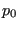
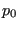
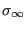

Next: *SURFACE INTERACTION Up: Input deck format Previous: *SURFACE Contents
Keyword type: model definition, surface interaction
With this option the surface behavior of a surface interaction can be defined. The surface behavior is required for a contact analysis. There is one required parameter PRESSURE-OVERCLOSURE. It can take the value EXPONENTIAL, LINEAR, TABULAR, TIED or HARD.
The exponential pressure-overclosure behavior takes the form in Figure
131. The parameters  and  define the kind of
contact. is the contact pressure at zero distance,
and  define the kind of
contact. is the contact pressure at zero distance,  is the distance from
the master surface at which the pressure is decreased to 1 % of . The
behavior in between is exponential. A large value of
is the distance from
the master surface at which the pressure is decreased to 1 % of . The
behavior in between is exponential. A large value of  leads to soft
contact, a small value to hard contact.
leads to soft
contact, a small value to hard contact.
The linear pressure-overclosure behavior (Figure 132) simulates a linear relationship
between the pressure and the overclosure. At zero overclosure the pressure is
zero as well. For node-to-face penalty contact the user should specify the slope of the pressure-overclosure
curve (usually 5 to 50 times the typical Young's modulus of the adjacent
materials; the default is the first elastic constant of the first encountered material in
the input deck
multiplied by 50) and the tension value for large clearances
 (should be
small, typically 0.25 % of the maximum stress expected; the default is the
first elastic constant of the first encountered material in the input deck divided by 70,000). The value
of  , from which the maximum clearance is calculated for which a spring contact
element is generated (by multiplying with the square root of the spring area,
cf. Section 6.7.5) can be specified too (default value
, from which the maximum clearance is calculated for which a spring contact
element is generated (by multiplying with the square root of the spring area,
cf. Section 6.7.5) can be specified too (default value  ). For
face-to-face contact only the slope of the pressure-overclosure relationship
is needed.
). For
face-to-face contact only the slope of the pressure-overclosure relationship
is needed.
The tabular pressure-overclosure relationship is a piecewise linear
curve. The user enters (pressure,overclosure) pairs. Outside the interval
specified by the user the pressure stays constant. The value
of  , from which the maximum clearance is calculated for which a spring contact
element is generated (by multiplying with the square root of the spring area,
cf. Section 6.7.5) takes the value
, from which the maximum clearance is calculated for which a spring contact
element is generated (by multiplying with the square root of the spring area,
cf. Section 6.7.5) takes the value  and cannot be changed by the
user. Due to programming restraints the use of a tabular pressure-overclosure
relationship in a thermomechanical calculation implies the use of a *GAP
CONDUCTANCE card defining the thermal conductance across the contact elements.
and cannot be changed by the
user. Due to programming restraints the use of a tabular pressure-overclosure
relationship in a thermomechanical calculation implies the use of a *GAP
CONDUCTANCE card defining the thermal conductance across the contact elements.
The tied pressure-overclosure behavior simulates a truly linear relationship between the pressure and the overclosure for positive and negative pressures. At zero overclosure the pressure is zero. It can only be used for face-to-face contact and similates tied contact between the slave and master face. Notice that all slave faces will be tied to opposite master faces, if any, irrespective whether there is a gap between them or not. The only parameter is the slope of the pressure-overclosure relationship. However, tied contact requires the specification of the stick slope on a *FRICTION card.
Hard pressure-overclosure behavior is internally reduced to linear pressure-overclosure behavior with the default constants.
First line:
Following line if PRESSURE-OVERCLOSURE=EXPONENTIAL:
Following line if PRESSURE-OVERCLOSURE=LINEAR:
Following line if PRESSURE-OVERCLOSURE=TABULAR:
Following line if PRESSURE-OVERCLOSURE=TIED:
Example: *SURFACE BEHAVIOR,PRESSURE-OVERCLOSURE=EXPONENTIAL 1.e-4,.1
defines a distance of  length units at which the contact pressure is
.001 pressure units, whereas the contact pressure at loose contact is 0.1
pressure units.
length units at which the contact pressure is
.001 pressure units, whereas the contact pressure at loose contact is 0.1
pressure units.
Example files: contact1, contact2.